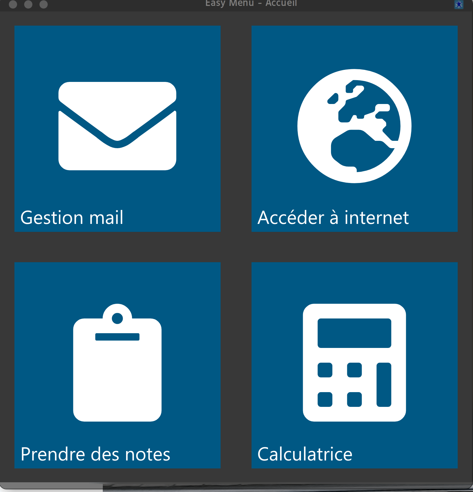
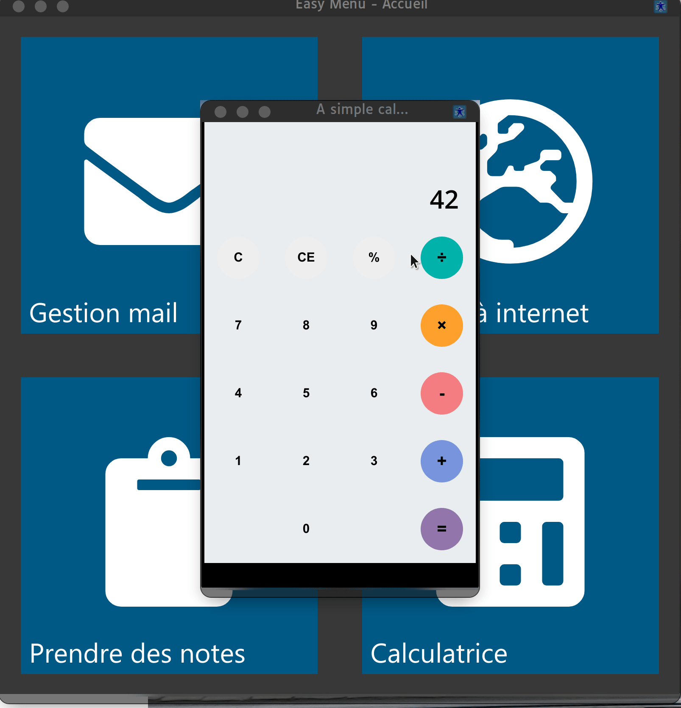

Soyez les bienvenu(e)s, DVKBuntuLight est une distribution linux basée sur Kubuntu, libre, ouverte, gratuite et simple d'accès. Comme son slogan l'indique : "L'informatique pour tous", le but de DVKBuntuLight est de proposer un système d'exploitation simple d'accès, notamment aux grands débutants en informatique, grâce à des outils permettant une meilleure accessibilité. Pour télécharger une image iso qui vous permettra d'installer DVKBuntuLight cliquez sur dans la barre du haut.
Attention toutefois il s'agit de la première version donc non stable et non fonctionnel à 100%, pourtant vous pouvez la tester et faire des retours sur notre forum ou sur notre Discord, par avance merci.